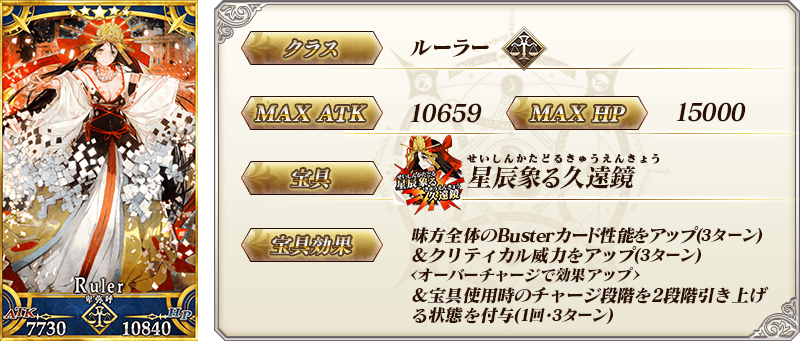
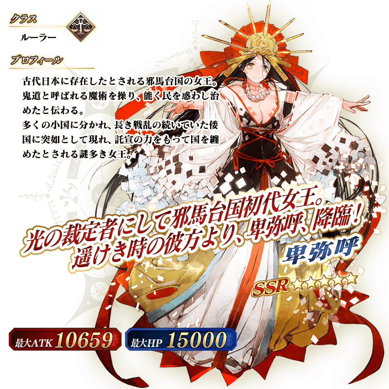
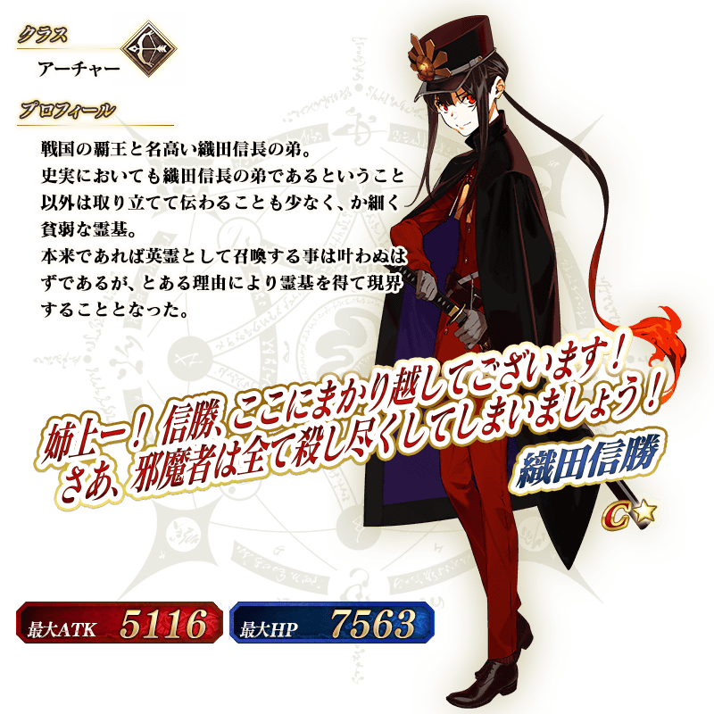
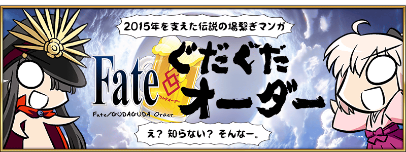

◆「GUDAGUDA邪馬台國2020Pick Up召喚」期間◆
期間:2020年10月9日(五) 19:00～10月23日(五) 11:59
舉辦期間限定「GUDAGUDA邪馬台國2020Pick Up召喚」！
從期間限定活動「超古代新選組列傳 GUDAGUDA邪馬台國2020」關聯的從者之中，下述的從者以期間限定新登場！ ・★5(SSR)卑彌呼 ・★4(SR)齋藤一
另外，下述的期間限定概念禮裝也Pick Up！ ・★5(SSR)誠の蛍火 ・★4(SR)晴れの日 ・★3(R)金色ノ原 裝備上述3種概念禮裝的話，在期間限定活動「超古代新選組列傳 GUDAGUDA邪馬台國2020」中會提升活動道具的掉落獲得數。
Pick Up期間中，Pick Up對象從者與概念禮裝的出現機率提升！
詳情請在聖晶石召喚畫面左下的召喚詳細確認。
11次召喚中確定1張★4(SR)以上和確定1位★3(R)以上的從者！ ※確定★4(SR)以上包含從者和概念禮裝。 ※本頁面皆為開發中圖片。會有與實際圖片相異的情況。
◆有關從者的注意◆
※下述的從者在Pick Up期間結束後不會追加到故事召喚。
・★5(SSR)卑彌呼
・★4(SR)齋藤一
◆有關概念禮裝的注意◆
※請注意會做為抽出對象的期間限定概念禮裝只限下述的概念禮裝，其他的期間限定概念禮裝為抽出對象外。
・★5(SSR)誠の蛍火
・★4(SR)晴れの日
・★3(R)金色ノ原
※下述的概念禮裝，2020年10月23日(五) 11:59為止的期間也能靠「期間限定GUDAGUDA邪馬台國2020友情點數召喚」獲得。
・★3(R)金色ノ原
※請注意在自動變還設定登錄★3(R)概念禮裝的情況，下述的概念禮裝會是自動變還的對象。
・★3(R)金色ノ原
 ※上述「★5(SSR)卑彌呼」的卡面為靈基再臨第3階段。


|
★★★★★SSR |

|
★★★★SR |

|
★★★R |
 ※上述「★5(SSR)卑彌呼」的立繪為靈基再臨第3階段。
介紹在本召喚Pick Up的2位從者寶具演出！ 在「Fate/Grand Order」官方網站內的公告中，以影片公開寶具演出，敬請確認。
【★5(SSR)卑彌呼】
【★4(SR)齋藤一】
※10月16日(五) 17:00圖片修正
本活動的期間中，友情點數召喚以期間限定變成「期間限定GUDAGUDA邪馬台國2020友情點數召喚」。
從「期間限定GUDAGUDA邪馬台國2020友情點數召喚」，平常的友情點數召喚會被抽出的再加上，可大幅強化概念禮裝的EXP卡「★4(SR)ようこそ邪馬台国！」「★3(R)猛者と無敵」變得會被抽出。
藉此機會入手概念禮裝EXP卡，強化概念禮裝吧！
◆「期間限定GUDAGUDA邪馬台國2020友情點數召喚」期間◆
2020年10月9日(五) 19:00～10月23日(五) 11:59
◆有關「期間限定GUDAGUDA邪馬台國2020友情點數召喚」的注意◆
※2020年10月9日(五) 19:00～10月23日(五) 11:59的期間，平常的友情點數召喚會變成「期間限定GUDAGUDA邪馬台國2020友情點數召喚」。
※期間中，無法進行平常的友情點數召喚。
※下述的概念禮裝，2020年10月23日(五) 11:59為止的期間也能靠「期間限定GUDAGUDA邪馬台國2020友情點數召喚」獲得。
・★3(R)金色ノ原
※請注意在自動變還設定登錄★3(R)概念禮裝的情況，下述的概念禮裝會是自動變還的對象。
・★3(R)金色ノ原
・★3(R)猛者と無敵
【10月16日(五) 17:00追記】
做為「期間限定GUDAGUDA邪馬台國2020友情點數召喚」限定的新從者，「★1(C)織田信勝」登場！
在下述介紹寶具效果和一部份個人資料！
※「★1(C)織田信勝」只限2020年10月9日(五) 19:00～10月23日(五) 11:59的期間中，從「期間限定GUDAGUDA邪馬台國2020友情點數召喚」抽出。 ※請注意「期間限定GUDAGUDA邪馬台國2020友情點數召喚」期間結束後，無法從平常的友情點數召喚抽出。



【10月16日(五) 17:00追記】
介紹「期間限定GUDAGUDA邪馬台國2020友情點數召喚」限定從者「★1(C)織田信勝」的寶具演出！
在「Fate/Grand Order」官方網站內的公告中，以影片公開寶具演出，敬請確認。
其他還有，期間限定活動「超古代新選組列傳 GUDAGUDA邪馬台國2020」同時舉辦！
並且，憑藉經驗值的官方支援漫畫「Fate/GUDAGUDA Order」也以期間限定復活！
關於詳情，請自下述橫幅確認。
■「超古代新選組列傳 GUDAGUDA邪馬台國2020」詳細情報

■「Fate/GUDAGUDAオーダー」 